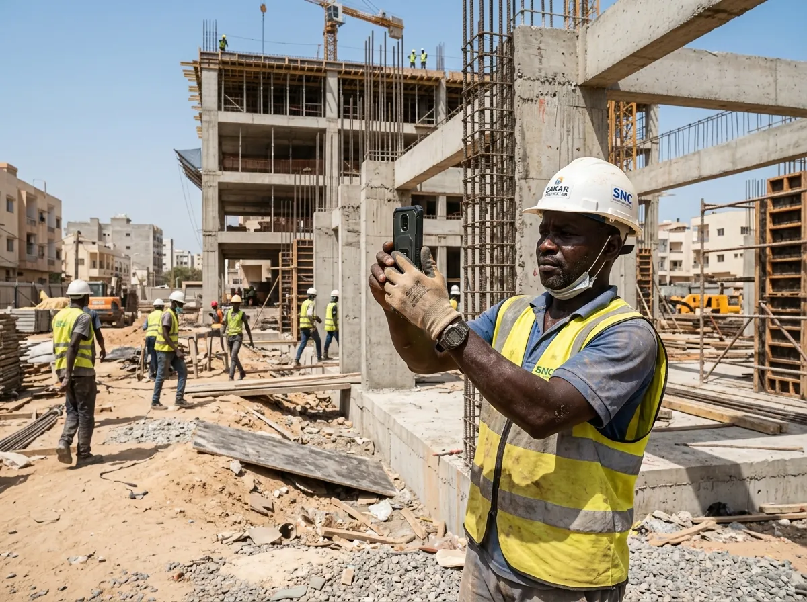
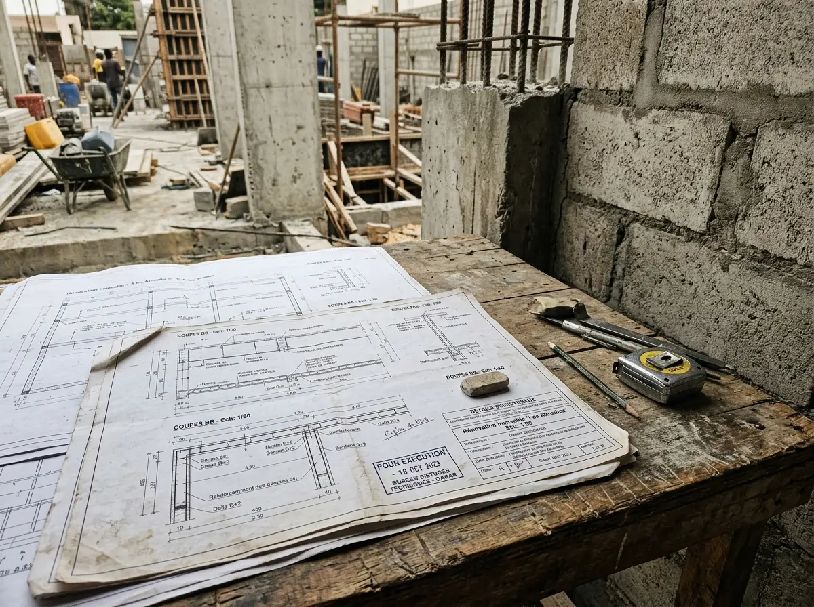

Construire depuis l'étranger : le défi de la confiance
Pour la diaspora sénégalaise en Europe, en Amérique ou dans les pays du Golfe, faire construire au pays représente l'aboutissement d'années d'efforts et d'épargne. Mais ce rêve se transforme trop souvent en parcours du combattant : devis initiaux gonflés, chantiers interminables, demandes incessantes d'allonges financières et désordres structurels découverts trop tard.
Dépendre d'un parent bien intentionné mais démuni techniquement ou accorder une confiance aveugle à un chef de chantier conduit inévitablement à des déconvenues. Notre mission est d'inverser ce rapport de force : passer de la "confiance aveugle" à la "confiance par la preuve".

Le contrôle technique via WhatsApp
Le suivi rigoureux d'un chantier à distance ne nécessite ni caméra 4K permanente ni billet d'avion mensuel. La transparence s'obtient grâce à une discipline de reporting photographique et vidéo articulée autour des points d'arrêt critiques.
Ce simple protocole réduit fortement les risques de malfaçons et limite la surfacturation des matériaux de gros œuvre, en instaurant une règle simple : aucun déblocage financier n'a lieu sans preuve visuelle horodatée.
Étape 1 : Le contrat clair et engageant
Tout commence par la formalisation juridique. Intégrez expressément la clause des Points d'Arrêt dans votre contrat de tâcheronnerie ou de louage d'ouvrage.
L'entrepreneur doit s'engager par écrit à ne jamais couler de béton (fondations, poteaux, linteaux, planchers) sans vous avoir préalablement transmis les photos et vidéos du ferraillage posé, avec un délai de visa de 24 à 48 heures.

Étape 2 : Le rapport de contre-expertise
Avant le premier décaissement, munissez-vous d'une référence technique indépendante.
Faites chiffrer vos métrés exacts et analyser votre devis par un bureau d'études impartial. Vous disposerez ainsi du quantitatif précis des sacs de ciment, des tonnes de fer et des volumes de gravier nécessaires, sans marge cachée.
Étape 3 : La validation visuelle avant paiement
Lorsqu'une phase est achevée, le chantier marque une pause. Le chef de chantier vous envoie une série convenue de photos grand-angle et de vidéos détaillées via WhatsApp.
Vous comparez ces éléments avec vos pièces de référence ou les soumettez à votre auditeur technique. Si tout est conforme, vous débloquez l'acompte correspondant à l'étape validée. S'il y a un défaut de calage ou une omission, l'artisan corrige avant coulage.
Comment ChantierSur vous protège
Pilotez votre chantier au Sénégal sans intermédiaire flou. ChantierSur vous fournit les métrés exacts, audite vos devis reçus et valide vos photos de points d'arrêt à distance. Vous gardez la maîtrise totale de vos finances et de la qualité des travaux.